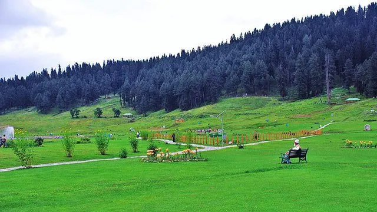

India Tourism
1. Srinagar
 Located on the banks of the Jhelum river, at an elevation of 5,200 feet, Srinagar holds the distinction of being the "summer capital" of J&K. Srinagar is well known for the"Dal Lake" and its many colourful 'shikharas' and house-boats. It is also known for dry fruit, saffron and traditional Kashmiri handicrafts like handwoven woollen shawls, carpets and rugs.
Located on the banks of the Jhelum river, at an elevation of 5,200 feet, Srinagar holds the distinction of being the "summer capital" of J&K. Srinagar is well known for the"Dal Lake" and its many colourful 'shikharas' and house-boats. It is also known for dry fruit, saffron and traditional Kashmiri handicrafts like handwoven woollen shawls, carpets and rugs.
2. Pahalgam
 Not far from the hustle and bustle of Srinagar is a pristine little hill-town called Pahalgam. The area holds a rich cover of vegetation, the dominant forest consisting of conifers which account for over 90%. There are many species of rare, endangered and protected species to be found among the vegetation here. Wildlife enthusiasts are bound to spot some Hangul, Musk deer, Serow, Brown bear, Leopard, Rhesus macaque, Grey langur, Wild bears etc, apart from a large variety of exotic mountain birds. Due to the constant threat of illegal border crossings, the Indian army is always patrolling the area and is on constant high alert. However, the area is safe for tourists.
Not far from the hustle and bustle of Srinagar is a pristine little hill-town called Pahalgam. The area holds a rich cover of vegetation, the dominant forest consisting of conifers which account for over 90%. There are many species of rare, endangered and protected species to be found among the vegetation here. Wildlife enthusiasts are bound to spot some Hangul, Musk deer, Serow, Brown bear, Leopard, Rhesus macaque, Grey langur, Wild bears etc, apart from a large variety of exotic mountain birds. Due to the constant threat of illegal border crossings, the Indian army is always patrolling the area and is on constant high alert. However, the area is safe for tourists.
3. Gulmarg

Legendary beauty, prime location and proximity to Srinagar make Gulmarg a premier hillstation in the region. Originally called "Gaurimarg" by shepherds, its present name was given in the 16th century by the Mughal Sultan Yusuf Shah, who was inspired by the sight of its grassy slopes emblazoned with wild flowers. But Gulmarg is not merely a mountain resort of flowery beauty- it also boasts of the highest green golf course in the world - at an altitude of 2,650 meters. The journey to Gulmarg is half the enchantment of reaching there -- roads avenued by tall fragrant poplars, rice fields interspersed with picturesque villages and lots of pretty fragrant flowers. There is a point known as "View Point", where travellers generally stop to get a lungful of fragrant air and take in the beauty of the white-capped mountains.
4. Sonamarg
 Situated at an altitude of 2730 metres, Sonamarg (that translates as 'Meadow of Gold') is backed by snowy mountains that stand tall against a cornflower blue sky. The Sindh River that meanders through the valley abounds with Trout, and angling is a favourite activity in this area. Ponies can be hired for the trip up to the Thajiwas glacier which is a major local attraction during the summer months (we recommend you have a walk instead). Weekend campers arrive here in herds during peak season. Thickly forested Sonamarg is filled with the fragrance of sycamore and alpine flowers, silver birch, fir and pine. Great to visit if you're an out and out nature lover.
Situated at an altitude of 2730 metres, Sonamarg (that translates as 'Meadow of Gold') is backed by snowy mountains that stand tall against a cornflower blue sky. The Sindh River that meanders through the valley abounds with Trout, and angling is a favourite activity in this area. Ponies can be hired for the trip up to the Thajiwas glacier which is a major local attraction during the summer months (we recommend you have a walk instead). Weekend campers arrive here in herds during peak season. Thickly forested Sonamarg is filled with the fragrance of sycamore and alpine flowers, silver birch, fir and pine. Great to visit if you're an out and out nature lover.
5. Leh/Ladakh
 There is very little left to say about the cold, bare and hauntingly beautiful desert of Ladakh, that hasn't already been said before. Tales of its beauty and mystique are sung far and wide, with people from all over the world putting the region on their bucket list of places to experience before they die. It's cold, it's crystal clear and it's very, very photogenic up here. Bi-humped bactrian camels, red cloaked monks, and flocks of mountain goat trudge along, lending the landscape a timeless aura. Stunning blue-green lakes ripple silently within giant basins of brown and purple rock. The sun and clouds bathe each part of the region in a different Hue at different times of the day; sometimes a hopeful golden, sometimes a glowering indigo. The region is very used to tourists, so you will always find plenty of places to stay, eat and rest. Hiring local driver-driven jeeps is expensive, so many people prefer to brave the terrain on yaks, bikes or on foot. Leh is a quiet, spiritual little town, steeped in tradition and Buddhist culture. Many people prefer to stay in Leh and make day trips into Ladakh and its neighbouring villages. Ladakh is great to visit if you're into travel photography or writing or just want a good adventure and some alone time.
There is very little left to say about the cold, bare and hauntingly beautiful desert of Ladakh, that hasn't already been said before. Tales of its beauty and mystique are sung far and wide, with people from all over the world putting the region on their bucket list of places to experience before they die. It's cold, it's crystal clear and it's very, very photogenic up here. Bi-humped bactrian camels, red cloaked monks, and flocks of mountain goat trudge along, lending the landscape a timeless aura. Stunning blue-green lakes ripple silently within giant basins of brown and purple rock. The sun and clouds bathe each part of the region in a different Hue at different times of the day; sometimes a hopeful golden, sometimes a glowering indigo. The region is very used to tourists, so you will always find plenty of places to stay, eat and rest. Hiring local driver-driven jeeps is expensive, so many people prefer to brave the terrain on yaks, bikes or on foot. Leh is a quiet, spiritual little town, steeped in tradition and Buddhist culture. Many people prefer to stay in Leh and make day trips into Ladakh and its neighbouring villages. Ladakh is great to visit if you're into travel photography or writing or just want a good adventure and some alone time.